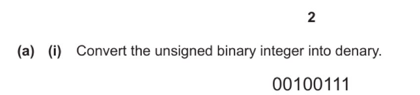
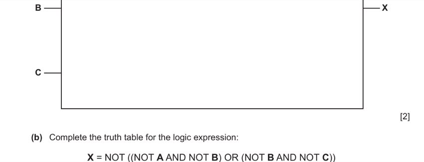
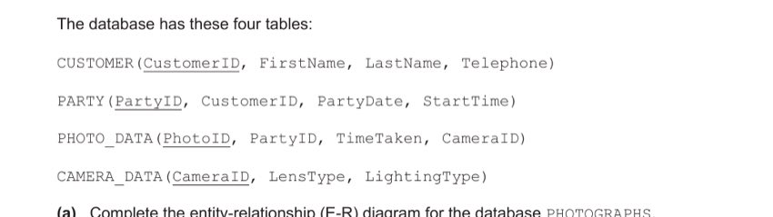
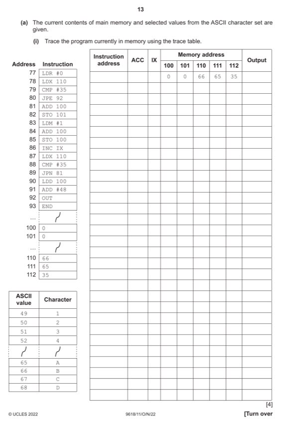
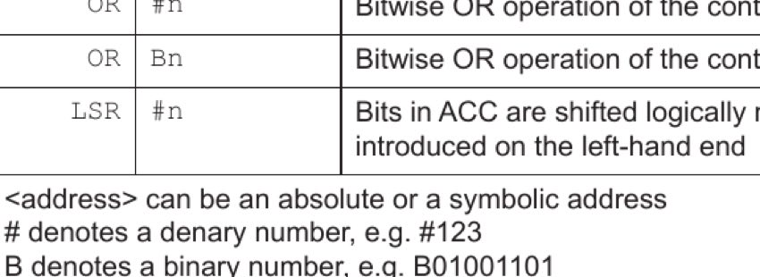
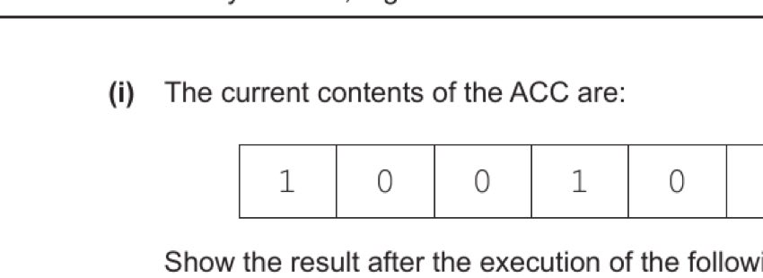
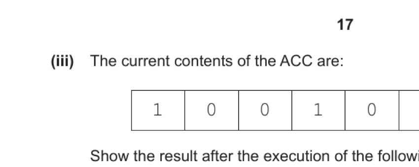
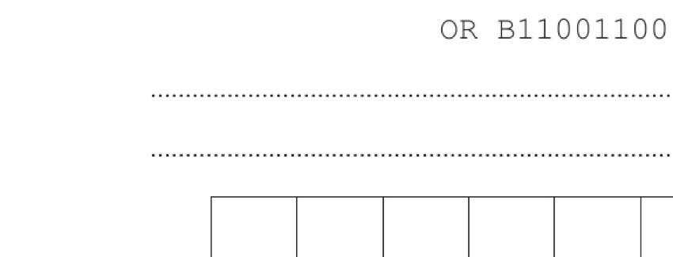

Question 1 — Data Representation (8 marks)
1 (a)(i) [1 mark]
Convert the unsigned binary integer 0010 0111 into denary.
Write out the place values for each bit position (128, 64, 32, 16, 8, 4, 2, 1):
Bits set: bit 5 (32), bit 2 (4), bit 1 (2), bit 0 (1)
Total: 32 + 4 + 2 + 1 = 39
- 39 [1]
1 (a)(ii) [1 mark]
Convert the Binary Coded Decimal (BCD) 0010 0111 into denary.
In BCD, each 4-bit group represents one decimal digit independently:
Left nibble: 0010 = 2
Right nibble: 0111 = 7
Answer: 27
- 27 [1]
1 (a)(iii) [1 mark]
Convert the 8-bit two's complement binary integer 1110 0111 into denary.
The MSB is 1, so this is a negative number. Find the magnitude by negating (invert then add 1):
Invert 1110 0111: → 0001 1000
Add 1: → 0001 1001 = 16 + 8 + 1 = 25
So the original value is −25.
- −25 [1]
1 (b) [2 marks]
Perform the binary subtraction: 1011 0011 − 0111 0101. Show your working.

Method: Convert to two's complement subtraction.
A − B = A + (−B)
Find two's complement of B (0111 0101):
Invert: 1000 1010
Add 1: 1000 1011
Add to A:
1011 0011 (A = 179 unsigned) + 1000 1011 (−B = −117) ----------- (1)0011 1110
Carry out from bit 7 = 1 (ignored for unsigned subtraction). Result: 0011 1110 = 62 (which is 179 − 117 = 62 ✓)
Answer: 0011 1110
- Working shown (borrowing method or two's complement). [1]
- Answer: 0011 1110 [1]
1 (c) [3 marks]
Give one similarity and two differences between the ASCII and Unicode character sets.
Similarity: Both character sets represent each character using a unique numeric code. The ASCII characters are a subset of Unicode — all ASCII codes appear in Unicode with the same values, so both represent the same basic Latin alphabet characters.
Difference 1: Unicode can use up to 32 bits per character (UTF-32), whereas ASCII uses only 7 bits (or 8 bits in Extended ASCII). This gives Unicode far more capacity.
Difference 2: Unicode can represent characters from virtually every written language in the world (over 140,000 characters), while standard ASCII represents only 128 characters from one language (English/Latin).
- Similarity: both use a unique code per character / Unicode contains all ASCII characters / both can use 8 bits. [1]
- Difference 1: Unicode uses more bits per character (up to 32) than ASCII (7 or 8). [1]
- Difference 2: Unicode represents more languages/characters than ASCII. [1]
1 (d)(i) [1 mark]
State what is meant by sampling rate.
The sampling rate (or sampling frequency) is the number of samples taken per unit time, typically expressed in hertz (Hz) or kilohertz (kHz). For example, a sampling rate of 44,100 Hz means 44,100 measurements of the analogue sound wave are taken every second.
- The number of samples taken per unit time / per second. [1]
1 (d)(ii) [2 marks]
Explain the effect of increasing the sampling resolution on the sound file.
The sampling resolution (bit depth) is the number of bits used to represent each individual sample. A higher resolution means each sample can take on a larger range of values.
Effect on accuracy: A higher sampling resolution means the amplitude of the sound wave is measured more precisely at each sample point. The digital representation more closely approximates the original analogue waveform, reducing quantisation errors (the error introduced by rounding each sample to the nearest representable value).
Effect on file size: More bits per sample means more data per unit time, so the file size increases.
- Increases the number of bits per sample / larger range of amplitude values. [1]
- File size increases / sound is more accurate / quantisation errors reduced. [1]
Question 2 — Security Features Matching (4 marks)
2 [4 marks]
Draw one line from each security feature to its most appropriate description.
| Security Feature | Description |
|---|---|
| Firewall | Converts data to an alternative form |
| Pharming | Redirects a user to a fake website |
| Anti-virus software | Verifies the authenticity of data |
| Encryption | Scans files on the hard drive for malicious software |
| Accepts or rejects incoming and outgoing packets based on criteria |
Firewall → Accepts or rejects incoming and outgoing packets based on criteria. A firewall examines network packets and allows or blocks them according to a defined set of rules (IP addresses, ports, protocols).
Pharming → Redirects a user to a fake website. Pharming attacks corrupt DNS records or host files so users are redirected to a fraudulent site even if they type the correct URL.
Anti-virus software → Scans files on the hard drive for malicious software. Anti-virus tools detect, quarantine, and remove viruses, trojans, and other malware.
Encryption → Converts data to an alternative form. Encryption scrambles plaintext into ciphertext using an algorithm, making it unreadable without the decryption key.
(Note: "Verifies the authenticity of data" → digital signature — not directly listed as a feature here, so no match for that description in this question.)
- Firewall ↔ Accepts/rejects packets based on criteria. [1]
- Pharming ↔ Redirects user to fake website. [1]
- Anti-virus ↔ Scans files for malicious software. [1]
- Encryption ↔ Converts data to alternative form. [1]
Question 3 — Logic Gates (4 marks)
3 (a) [2 marks]
Draw a logic circuit for the expression: X = NOT ((NOT A AND NOT B) OR (NOT B AND NOT C))
(The QP provides a blank drawing area with inputs A, B, C on the left and X on the right.)
Break the expression into layers:
Layer 1: NOT A, NOT B, NOT C — three separate NOT gates on inputs A, B, C.
Layer 2a: NOT A AND NOT B — an AND gate taking NOT A and NOT B as inputs.
Layer 2b: NOT B AND NOT C — an AND gate taking NOT B and NOT C as inputs.
Layer 3: (NOT A AND NOT B) OR (NOT B AND NOT C) — an OR gate combining the outputs of both AND gates.
Layer 4: NOT of the OR output — a final NOT gate gives X.
This is equivalent to: X = (A OR B) AND (B OR C) by De Morgan's theorem.
- NOT A AND NOT B and NOT B AND NOT C — correct gates for both sub-expressions. [1]
- Final OR gate and NOT gate (with correct inputs). [1]
3 (b) [2 marks]
Complete the truth table for: X = NOT ((NOT A AND NOT B) OR (NOT B AND NOT C))

For each row, evaluate: NOT A AND NOT B = only 1 when A=0,B=0. NOT B AND NOT C = only 1 when B=0,C=0. The OR of those is 1 when either is 1. The NOT of the OR is the final X.
| A | B | C | ¬A∧¬B | ¬B∧¬C | OR | X |
|---|---|---|---|---|---|---|
| 0 | 0 | 0 | 1 | 1 | 1 | 0 |
| 0 | 0 | 1 | 1 | 0 | 1 | 0 |
| 0 | 1 | 0 | 0 | 0 | 0 | 1 |
| 0 | 1 | 1 | 0 | 0 | 0 | 1 |
| 1 | 0 | 0 | 0 | 1 | 1 | 0 |
| 1 | 0 | 1 | 0 | 0 | 0 | 1 |
| 1 | 1 | 0 | 0 | 0 | 0 | 1 |
| 1 | 1 | 1 | 0 | 0 | 0 | 1 |
- Rows 1–4 correct (0,0,1,1). [1]
- Rows 5–8 correct (0,1,1,1). [1]
Question 4 — Database PHOTOGRAPHS (12 marks)
Tables: CUSTOMER(CustomerID, FirstName, LastName, Telephone) · PARTY(PartyID, CustomerID, PartyDate, StartTime) · PHOTO_DATA(PhotoID, PartyID, TimeTaken, CameraID) · CAMERA_DATA(CameraID, LensType, LightingType)
4 (a) [3 marks]
Complete the entity-relationship (E-R) diagram for database PHOTOGRAPHS.

Analyse the foreign keys to determine relationships:
• PARTY has CustomerID as a foreign key → links PARTY to CUSTOMER. One customer can have many parties: CUSTOMER 1:M PARTY.
• PHOTO_DATA has PartyID and CameraID as foreign keys:
– One party can produce many photos: PARTY 1:M PHOTO_DATA.
– One camera can take many photos: CAMERA_DATA 1:M PHOTO_DATA.
Place "1" and "M" (crow's foot) annotations on the connecting lines accordingly.
- 1:M between CUSTOMER and PARTY. [1]
- 1:M between PARTY and PHOTO_DATA. [1]
- 1:M between CAMERA_DATA and PHOTO_DATA. [1]
4 (b) [3 marks]
Describe the characteristics of a database in Third Normal Form (3NF).
A database in 3NF must satisfy three conditions:
1NF: All attribute values must be atomic (no repeating groups or multi-valued attributes within a single cell).
2NF: No partial key dependencies — every non-key attribute must depend on the entire primary key, not just part of it. (Relevant when the primary key is composite.)
3NF: No transitive dependencies (non-key dependencies) — no non-key attribute should depend on another non-key attribute. Every non-key attribute must depend directly on the primary key and only the primary key.
- No repeating groups of attributes / data is atomic. [1]
- No partial key dependencies. [1]
- No non-key / transitive dependencies. [1]
4 (c)(i) [2 marks]
State what is meant by a tuple. Give an example from PHOTO_DATA.
A tuple is a single row in a relational database table. It represents one complete record — a set of attribute values that together describe one entity instance.
Example from PHOTO_DATA: (ST23-56, BD987, 08:34, NIK-02) — this is one tuple representing a single photograph (Photo ID ST23-56, taken at party BD987 at 08:34 using camera NIK-02).
- A single row in a table. [1]
- Valid example from PHOTO_DATA (any complete row). [1]
4 (c)(ii) [4 marks]
Complete the SQL script to display the total number of photographs taken with a camera whose CameraID starts with 'CAN'.
SELECT ________ (________) FROM ________ WHERE CameraID LIKE ________;
We need COUNT to get a total, specify PhotoID as the field to count, query PHOTO_DATA, and use LIKE with a wildcard for CameraIDs beginning with 'CAN'.
SELECT COUNT(PhotoID) FROM PHOTO_DATA WHERE CameraID LIKE 'CAN%';
(Use 'CAN*' in MS Access, 'CAN%' in standard SQL.)
- COUNT [1]
- PhotoID [1]
- PHOTO_DATA [1]
- 'CAN%' or 'CAN*' [1]
4 (d) [3 marks]
Write an SQL script to add two new fields to CAMERA_DATA: one for the number of photographs currently on the camera, and one for the date the camera was last used.
Use ALTER TABLE to add columns. Number of photographs is an integer; date last used is a DATE type.
ALTER TABLE CAMERA_DATA
ADD NumberStored INTEGER,
LastUsed DATE;
- ALTER TABLE CAMERA_DATA [1]
- ADD NumberStored INTEGER [1]
- LastUsed DATE [1]
Question 5 — CPU Architecture (11 marks)
5 (a) [1 mark]
State what is meant by the stored program concept in the Von Neumann model.
The stored program concept means that both instructions (program code) and data are stored together in the same main memory (RAM) in binary form. The CPU fetches instructions from memory one at a time and executes them sequentially. This allows programs to be modified in memory and enables general-purpose computing.
- Instructions and data stored in the same memory / in main memory. [1]
5 (b)(i) [3 marks]
State the role of the Program Counter (PC), Index Register (IX), and Status Register (SR).
Program Counter (PC): Stores the memory address of the next instruction to be fetched from RAM. It is incremented after each fetch so the CPU automatically moves to the next instruction in sequence.
Index Register (IX): Stores a value that is added to a base address to form the effective (final) memory address for indexed addressing mode. It allows sequential access to arrays or tables by incrementing IX.
Status Register (SR): Contains individual flag bits that are set or cleared based on the results of arithmetic/logic operations and events such as interrupts. Common flags include zero flag (result was zero), carry flag, overflow flag, and interrupt enable flag.
- PC: stores address of next instruction to be fetched. [1]
- IX: stores a value added to an address to calculate a new address. [1]
- SR: stores flags set by arithmetic/logic operations and interrupt flags. [1]
5 (b)(ii) [1 mark]
Tick one box per row to identify the system bus used by the System Clock and the Memory Address Register (MAR).
System clock → Control bus. The clock generates timing pulses that synchronise all CPU operations. Timing signals travel over the control bus.
Memory Address Register (MAR) → Address bus. The MAR holds the memory address the CPU wants to access. This address is placed onto the address bus to reach the correct memory location.
- System clock → Control bus; MAR → Address bus (both correct for 1 mark). [1]
5 (b)(iii) [2 marks]
Describe the purpose of the Control Unit (CU) in a CPU.
The Control Unit coordinates and synchronises all the activities of the CPU and other system components. It:
• Fetches instructions from memory (via the F-E cycle) and decodes them.
• Sends control signals along the control bus to direct the activities of other components — telling the ALU what operation to perform, directing data flows between registers, and controlling memory reads/writes.
• Manages the timing of operations so they occur in the correct sequence.
- Coordinates/synchronises actions of components / sends control signals along control bus. [1]
- Manages execution of instructions in sequence / controls communication between components. [1]
5 (c) [2 marks]
Describe the purpose of an interrupt in a computer system.
An interrupt is a signal sent from a device or process to the CPU, requesting the CPU's immediate attention. It informs the processor that an event has occurred that requires handling — for example, a key press, a completed I/O operation, a hardware error, or a timer expiry. The interrupt temporarily suspends the current process so the CPU can attend to the urgent event.
- To send a signal from a device or process. [1]
- Seeking the attention of the processor. [1]
5 (d) [2 marks]
Identify two causes of a software interrupt.
Software interrupts are generated by the executing program itself (rather than external hardware). Causes include:
1. Division by zero: A program attempts to divide a number by zero, which is mathematically undefined — the CPU generates a software interrupt to handle this exception.
2. Attempt to access an invalid memory location: A program tries to read or write to a memory address outside its allowed region (segmentation fault / memory protection violation).
Also valid: array index out of bounds; stack overflow.
- Division by zero / runtime error. [1]
- Invalid memory access / array index out of bounds / stack overflow. [1]
Question 6 — Assembly Language Program Trace & Bit Operations (14 marks)
6 (a)(i) [4 marks]
Trace the program in memory. Initial memory: 100=0, 101=0, 110=66, 111=65, 112=35. ASCII: 49='1', 50='2', 65='A', 66='B'.

The program iterates through memory locations 110, 111, 112. It compares each value to 35 (#). If it's 35 (end marker), it jumps to line 92 (OUT). Otherwise it adds the value at 100 (a counter) to ACC and stores, then increments the counter. The program counts how many non-# characters appear before the # marker and outputs the corresponding ASCII digit.
Completed trace (key rows):
| Instr addr | ACC | IX | mem[100] | mem[101] | Output |
|---|---|---|---|---|---|
| 77 | 0 | 0 | 0 | ||
| 78 | 66 | ||||
| 81 | 66 | ||||
| 82 | 66 | ||||
| 83 | 1 | ||||
| 84 | 1 | ||||
| 85 | 1 | ||||
| 86 | 1 | ||||
| 87 | 65 | ||||
| 89 | |||||
| 81 | 66 | ||||
| 82 | 66 | ||||
| 83 | 1 | ||||
| 84 | 2 | ||||
| 85 | 2 | ||||
| 86 | 2 | ||||
| 87 | 35 | ||||
| 90 | 2 | ||||
| 91 | 50 | ||||
| 92 | 2 |
The program counted 2 non-# characters (B and A at addresses 110 and 111), then added #48 to get ASCII '2' (50), and output the character '2'.
- First iteration (IX=0, compares 66≠35, adds to count): 1 mark per highlighted block. [4 total]
6 (a)(ii) [1 mark]
State the purpose of this code fragment:
LDD 100 / STO 165 / LDD 101 / STO 100 / LDD 165 / STO 101
This code uses address 165 as a temporary (swap) variable. It copies the value at address 100 to 165, then copies 101 to 100, then copies 165 (original 100) to 101. The net effect is to swap the contents of memory addresses 100 and 101.
- Swaps the contents of memory addresses 100 and 101. [1]
6 (b)(i) [1 mark]

Show the result after XOR B00011111 on ACC = 1001 0011.
XOR flips each bit where the mask is 1, leaves it unchanged where mask is 0:
ACC: 1 0 0 1 0 0 1 1 MASK: 0 0 0 1 1 1 1 1 XOR: 1 0 0 0 1 1 0 0
Result: 1000 1100
- 1000 1100 [1]
6 (b)(ii) [1 mark]

Show the result after AND B11110000 on ACC = 1001 0011.
AND keeps a bit as 1 only where both ACC and mask are 1:
ACC: 1 0 0 1 0 0 1 1 MASK: 1 1 1 1 0 0 0 0 AND: 1 0 0 1 0 0 0 0
Result: 1001 0000
- 1001 0000 [1]
6 (b)(iii) [1 mark]

Show the result after OR B11001100 on ACC = 1001 0011.
OR sets each bit to 1 if either ACC or mask is 1:
ACC: 1 0 0 1 0 0 1 1 MASK: 1 1 0 0 1 1 0 0 OR: 1 1 0 1 1 1 1 1
Result: 1101 1111
- 1101 1111 [1]
6 (b)(iv) [1 mark]

Show the result after LSR #2 on ACC = 1001 0011.
LSR (Logical Shift Right) by 2: shift all bits right by 2 positions, introducing 0s at the left end:
Before: 1 0 0 1 0 0 1 1 LSR #2: 0 0 1 0 0 1 0 0 (bits 10010011 → 00100100, the rightmost 2 bits are lost)
Result: 0010 0100
- 0010 0100 [1]
6 (c) [2 marks]
Tick one or more boxes to indicate whether each task is performed in the first pass or second pass of a two-pass assembler.
A two-pass assembler works as follows:
First pass: Reads through the source code, building a symbol table (recording labels and their addresses). Also removes comments, checks that opcodes are valid, reads the program line by line.
Second pass: Uses the symbol table from pass 1 to generate the final object code (machine code), resolving all label references to actual addresses. Also reads the program line by line again.
| Task | First pass | Second pass |
|---|---|---|
| Remove comments | ✓ | |
| Read the assembly language program one line at a time | ✓ | ✓ |
| Generate the object code | ✓ | |
| Check the opcode is in the instruction set | ✓ |
- Remove comments → First; Read → Both; Generate object code → Second; Check opcode → First. [1 per correct pair of rows]
Question 7 — System Software & Performance (13 marks)
7 (a) [2 marks]
State two benefits to a programmer of using Dynamic Link Library (DLL) files.
1. Reduced memory requirements: DLL files are only loaded into memory when needed and are shared among multiple programs that use them simultaneously, so each program doesn't need its own copy of the library code in memory.
2. No recompilation needed for updates: If a bug is fixed or a feature is improved in the DLL, the programmer can update the DLL file without recompiling the main program. The main executable file is smaller because it doesn't embed the library code.
- Memory requirements reduced / DLL loaded once / shared. [1]
- No need to recompile main program when DLL is updated / executable file is smaller. [1]
7 (b) [2 marks]
Describe the ways in which memory management organises and allocates RAM.
The OS memory manager divides RAM into blocks (pages or segments) and dynamically allocates blocks to programs and processes as needed. It keeps track of which blocks are in use and which are free, reclaiming memory when a process finishes. It also ensures two processes cannot occupy the same RAM area simultaneously, preventing data corruption. It may also manage virtual memory — temporarily moving less-used data from RAM to disk (paging/swapping) to allow more programs to run than would physically fit in RAM.
- RAM assigned into blocks / dynamic allocation to programs. [1]
- Reclaims unused blocks / prevents two processes occupying the same area / manages paging/virtual memory. [1]
7 (c) [3 marks]
Describe one appropriate method of compressing a text file.
Method: Run-Length Encoding (RLE) — a lossless compression technique.
The algorithm scans the text file and identifies runs of consecutive identical characters. Instead of storing each character individually, it replaces each run with a pair: (character, count of repetitions).
For example, "AAAAAABBBCCCC" (13 characters) becomes [A,6][B,3][C,4] — just 6 values — significantly reducing file size when there are long runs of repeated characters.
The original text can be perfectly reconstructed from the compressed form (lossless).
- Lossless compression / Run-Length Encoding. [1]
- Identifies repeated sequences of characters. [1]
- Replaces with a single copy and a count. [1]
7 (d) [2 marks]
Explain the reasons why increasing the amount of cache memory can improve CPU performance.
Cache memory is a small, very fast memory bank located physically close to or on the CPU die. It stores copies of frequently accessed instructions and data.
When the CPU needs data, it first checks the cache. If found (a cache hit), the data is retrieved much faster than if the CPU had to access RAM. If not found (a cache miss), the CPU must wait for slower RAM access.
More cache memory means more frequently used instructions and data can be stored simultaneously. This leads to more cache hits, fewer costly RAM accesses, and less time the CPU spends idle waiting for data — overall improving throughput and performance.
- Cache is fast-access memory that stores frequently used instructions/data. [1]
- More cache → more data stored for fast access → less swapping with RAM / prevents CPU idling. [1]
7 (e) [2 marks]
State the name of a peripheral device port that provides a physical connection for: (1) a 3D printer, (2) a monitor.
3D printer: USB port (USB-A or USB-B). Most 3D printers connect via USB. Some may also use a COM (serial) port.
Monitor: HDMI port (most common on modern computers). Also valid: VGA, DisplayPort, USB-C (with DisplayPort Alt Mode).
- 3D printer: USB / COM port. [1]
- Monitor: HDMI / VGA / DisplayPort / USB. [1]
Question 8 — CSMA/CD in a Bus Network (4 marks)
8 [4 marks]
Describe how CSMA/CD is used in a bus network.
CSMA/CD (Carrier Sense Multiple Access / Collision Detection) manages shared access to the bus cable:
1. Before transmitting, a device listens to the bus (carrier sense). If the channel is busy (another device is transmitting), it waits until the channel becomes free.
2. When the channel is free, the device transmits its data. However, because multiple devices share the bus (multiple access), two devices might detect a free channel at the same instant and start transmitting simultaneously.
3. This simultaneous transmission causes a collision — the data signals corrupt each other.
4. Both devices detect the collision (the signal on the wire differs from what was sent) and immediately abort transmission. They broadcast a jamming signal to alert all devices that a collision has occurred.
5. Each device waits a random back-off time before attempting to retransmit. The randomness prevents both devices retrying at the same time and colliding again.
- Device listens / checks channel is free before transmitting. [1]
- Multiple computers on same medium — two can transmit at once, causing a collision. [1]
- Collision detected — transmission aborted / jamming signal sent. [1]
- Devices wait a random time before retrying. [1]
Question 9 — Embedded Systems & EEPROM (4 marks)
9 (a) [2 marks]
Explain why modern televisions are embedded systems.
An embedded system is a computing system integrated into a larger device to perform a specific, dedicated function.
Modern televisions qualify because their processor and memory are built into / integrated inside the television hardware — you cannot remove the "computer" from the TV.
The TV's computer system is designed to perform a specific set of functions (decoding video signals, managing channels, rendering the user interface, handling remotes) — it is not a general-purpose computer that the owner can freely reprogram.
- Embedded system is built into / integrated into the TV. [1]
- Combination of hardware and software designed for a specific function / not easily changed by owner. [1]
9 (b) [2 marks]
Describe one benefit of using EEPROMs in an embedded system.
EEPROM (Electrically Erasable Programmable ROM) can be erased and reprogrammed using electrical signals without removing it from the device. This means:
The firmware (software in the embedded system) can be updated remotely or by a technician without disassembling the device. For example, a smart TV manufacturer can push firmware updates over the internet to add features or fix bugs, without requiring the TV to be sent for repair. This is a significant practical benefit compared to ROM (which cannot be updated at all) or EPROM (which requires UV light and physical removal).
- Can be reprogrammed / erased without removing from device. [1]
- Firmware can be updated (e.g. by non-technical users over the internet). [1]